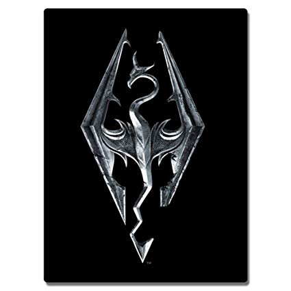
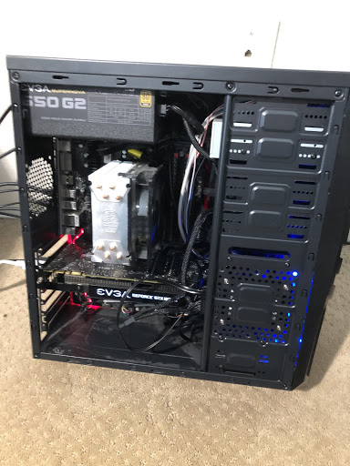

My name is Isaiah and I like to play video games, Build computers, work on robots with the robotics club, and Go swimming/freediving. Im 15 and a sophmore here at James Campbell highschool, Ive lived in hawaii for about 7 years now and still love being here. This Is my website designed to basically give you a bit of a look into my life
| I think I should start with saying that Im a huge nerd and youll get to see a bit of that here but I figured I should start with my most prominent hobby which happens to be video games. I play video games pretty often and whenever I have time between everything else im juggling, I play all my games on a custom built gaming computer which Ill get into a little more later. But of course just saying I play video games is a very broad statement so if you were intrested the games I play the most are Rainbow six siege, The elder scrolls V:Skyrim, Minecraft(Sometimes modded) And a few virtual reality games via an occulus rift which is a virtual reality headset. Ive always enjoyed the idea of certain games these ones specifically just having the ability to do whatever I want whatever way I want to do it. |  | |
|---|---|---|
| Like I teased at earlier I do play video games on a computer I built myself which is a perfect way to get into my love for computers and how they work. I took intrest in computers after seeing what more they could do than a console could so I took to learning all the parts and how they worked together and after a few months I had learned enough and gather enough money to slap together the computer that would later be what I have now(For anyone who is intrested my computer has a 1070 Ti nvidea graphics card, AMD Ryzen 5 1600x cpu, 500gb samsung ssd, 1tb hdd, Gigabyte Ab-350 gaming motherboard and 16gb of 3000mhz RAM.) |  | |
| The robotics club is a brand new thing for this school or atleast it is for this generation of students, The last time there was a robotics club was quite a few years ago and me and a few other decided to start it back up. The club isnt really much at the moment because we are scrambling to get parts organized and take inventory of what we have left of the old teams. We will be doing vex robotics(Metal robots), Seaperch(submarine type robots) And First robotics(Metal robots but much, much bigger) | |
|
| Lastly there is freediving and swimming. Ive been swimming my whole life but only recently have I gotten serious enough to try and get good at freediving and personally I dont think Im doing to bad. My lung capacity is decent and I can get quite deep underwater before It become an issue for me. | |